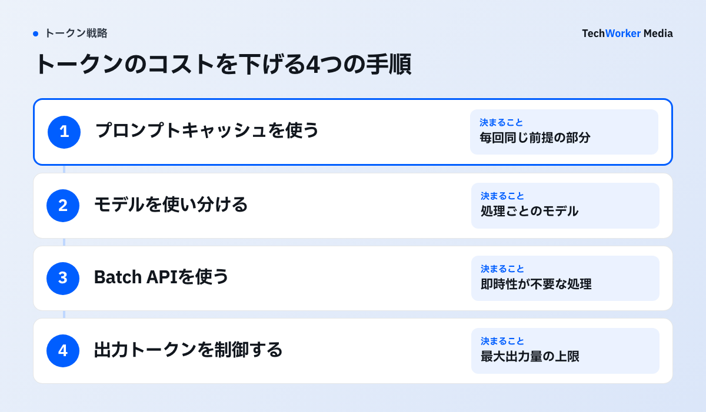
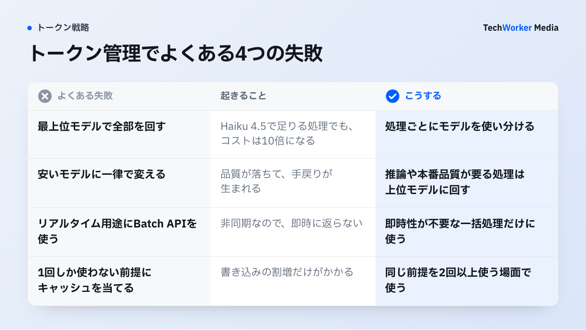

トークンマネジメントとは何で、なぜ必要なのですか？
生成AIが扱うトークン量を管理し、品質を保ちながらコストと処理速度を最適化する戦略です。
トークンとは、AIが文章を処理するときの最小単位です。おおよそ単語や文字のかたまりにあたります。生成AIのAPIは、入力トークンと出力トークンの量に応じて課金されます。
コストは「トークン単価×使用量」で決まります。使えば使うほど増えるため、放置すると無駄が積み上がります。
- 同じ長い資料を、毎回まるごと送信する。
- 不要な会話履歴を、毎リクエストに含める。
- 必要以上に長い出力を、生成させる。
同じ処理をいかに少ないトークンで回すかを設計するだけで、品質を落とさずにコストを大きく下げられます。品質を最大化するトークンマキシングとは逆向きの、コスト最小化の発想です。
最も効くのは、次の4つです。
- プロンプトキャッシュ（読み出しは通常入力の約0.1倍、最大約90%減）
- モデルの使い分け
- Batch API（50%オフ）
- 出力の制御
TechWorkerは、トークンの費用をどう管理していますか？
作業ごとにモデルを分け、キャッシュを効かせ、費用を毎回見える場所に出しています。
TechWorkerでは、代表の古野が毎日Claude Codeを使っています。用途は、自社サービスの開発、メディアの改修、営業資料の作成、毎朝の自動の集計です。
契約は、個人向けプランのMax 20x（月200ドル）です。使用量の上限を超えた分を従量で払う設定（extra usage）も有効にしています。
使った量は、代表の端末の利用記録を集計ツール（ccusage）でAPI料金に換算して測りました。2026年9月14日〜30日の17日間で約3,000ドル分、1日平均で約180ドル分です。
日による差も大きく、少ない日は約4ドル分、多い日は約850ドル分でした。200倍以上の開きです。
換算額は、実際の請求額とは異なります。定額の範囲内の利用には、追加の支払いは発生しません。
費用を抑えるために、次の3つを続けています。
- 作業ごとにモデルを分けます。大事な判断は上位モデル、調べものと通常の実装はSonnet、決まった抜き出しはHaikuです。毎朝の自動の集計もSonnetで動かしています。
- キャッシュを効かせます。2026年9月は、入力の約97%がキャッシュからの読み込みでした。
- 使用量を見える場所に出します。1回の応答ごとに、その回と累計の推定額を画面の下に表示しています。前日の利用額は、毎朝社内のSlackに届きます。
この3つは、次の手順のうち、モデルの使い分け、キャッシュ、使用量の可視化にあたります。
トークンのコストを下げるには、どんな手順で進めますか？
プロンプトキャッシュ、モデルの使い分け、Batch API、出力制御の4つを順に当てはめます。

- プロンプトキャッシュを使います。システムプロンプトや長い参照資料など、毎回同じ前提をキャッシュします。Anthropicの公式仕様では、キャッシュからの読み出しは通常入力トークンの約0.1倍（およそ90%安）です。書き込みは1.25倍（5分有効）、または2倍（1時間有効）かかります。同じ前提を2回以上使うワークフローなら、元が取れます。
- モデルを使い分けます。すべてを最上位モデルで処理する必要はありません。単純な分類や要約は安価なモデル、推論や本番品質が要る処理は上位モデルに回します。料金は下の表のとおりです。
- Batch API（バッチ処理）を使います。即時応答が不要な処理は、非同期のバッチ処理にすると50%オフになります。対象は、大量の分類、要約、データ整形などです。夜間バッチに向いています。
- 出力トークンを制御します。出力にも課金されます。最大出力量（max_tokens）の上限設定や、簡潔に答える指示で、長すぎる出力を防ぎます。あわせて使用量をモニタリングし、どこで無駄が出ているかを可視化します。
トークン管理がうまくいかない例には、どんなものがありますか？
最上位モデルで全部を回すこと、一律に絞ること、リアルタイム用途にバッチを使うことが代表例です。

- 最上位モデルで全部を回す。Haiku 4.5で足りる処理をFable 5.1で回すと、コストは10倍になります。
- 安いモデルに一律で変える。安いモデルで品質が落ちると、手戻りが生まれます。タスクで使い分けます。
- リアルタイム用途にBatch APIを使う。バッチは非同期のため、チャットのような即時応答には向きません。
- キャッシュを1回しか使わない前提に当てる。書き込みには割増がかかります。同じ前提を2回以上使う場面で使います。
すべてを絞ればよいわけではありません。絞る場面と、品質に振り切る場面を、局面で使い分けます。
- 大量・単純・反復の処理は、絞ります。1件あたりの価値が小さいためです。
- 即時性が不要な一括処理は、Batchで絞ります。50%オフで回収しやすいためです。
- 重要な意思決定、調査、本番品質は、振り切ります。精度がそのまま成果になるためです。
- 判断ミスのコストがトークン代を上回る場面も、振り切ります。手戻りのほうが高くつくためです。
モデル別の料金は、どう違いますか？
Haiku 4.5は入力1ドル、Fable 5.1は入力10ドルで、同じ処理でも10倍の差が出ます。
主要なClaudeモデルの料金です。100万トークンあたりで、2026年時点の公式価格です。Fable 5.1・Opus 5.5・Sonnet 5.5は、100万トークンのコンテキストを標準料金（長文の追加料金なし）で扱えます。
| モデル | コンテキスト | 入力 / 100万 | 出力 / 100万 | 主な用途 |
|---|---|---|---|---|
| Haiku 4.5 | 20万 | $1 | $5 | 分類・抽出など軽量・高速処理 |
| Sonnet 5.5 | 100万 | $2 | $10 | 速度と品質のバランス・量産 |
| Opus 5.5 | 100万 | $4 | $20 | 高度な推論・本番品質 |
| Fable 5.1 | 100万 | $10 | $50 | 最難関タスク向け最上位 |
料金はAnthropic公式の料金ページで2026年9月30日に確認した標準料金です（米ドル、100万トークン当たり）。
出典：Anthropic公式の料金体系（2026年）。
よくある質問
キャッシュからの読み出しは通常入力の約0.1倍（およそ90%安）のコストです。同じ前提（システムプロンプト・長い資料）を繰り返し使うワークフローほど、効果が大きくなります。
品質要件次第です。単純な分類はHaiku 4.5、推論や本番品質が要る処理はOpus 5.5と、タスクで使い分けます。安いモデルで品質が落ちると、本末転倒です。
即時応答ではない点です。料金は50%オフになりますが非同期処理のため、チャットのようなリアルタイム用途には向きません。夜間バッチなど、即時性が不要な処理に適しています。
マネジメントは、効率・コスト最小化の戦略です。マキシングは、品質最大化のためにあえてトークンを多く使う戦略です。両者は対であり、局面で使い分けます。
次の一歩は、何から始めればよいですか？
最上位モデルへの一律依存をやめ、絞る処理と振り切る処理を分けるところから始めます。
上場企業を含む37社・2,500名の支援を通じて、傾向が見えてきました。コスト見直しの最初の一手は、最上位モデルへの一律依存をやめることです。
- 用途を、絞る処理と振り切る処理に分けます。
- キャッシュ、モデルの使い分け、Batch API、出力制御を、絞る処理から当てはめます。
- 使用量を見える場所に出し、どこで無駄が出ているかを確かめます。
どこを絞り、どこに投資するかは、業務の文脈に合わせて設計します。トークンマキシングと対で運用します。「どのモデルを・どこに・どう使うか」の整理は、画面下の「無料で相談する」からご相談ください。